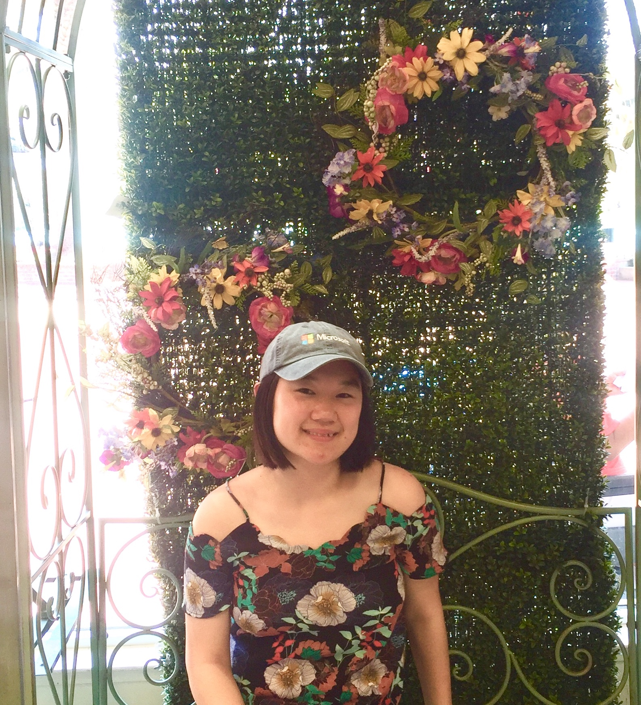

I am a 3rd year Computer Science student at University of Washington Seattle. This fall, I will be TAing
UW's Introduction to Programming class and leading quiz sections for incoming students interested
in computer science.
I am a proud first generation college student and am motivated to explore the intersection of technology and data
in order to craft inclusive products for people with situational disabilities. I plan to bring
my dynamic skillset and growth mindset to advance my pathway in exploring Computer Science.